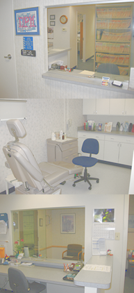

|
|
| Where Will Your Feet Take You Today? |
|
to our practice and thank you for visiting our web site.
We have been providing comprehensive foot and ankle medical and surgical care in Chicago for over 21 years.
We take time to listen to your foot health problems and concerns.
|
All of our new patient appointments include a thorough, comprehensive evaluation with in office x-rays, if needed, which are immediately developed and read on site.
Dr. Ouska-Griffin is a Chicago native and graduate of Loyola University and Dr. William M. Scholl College of Podiatric Medicine now part of The Rosalind Franklin Medical College Campus in North Chicago. She completed a medical/surgical residency at Loyola University Medical Center and Hines VA Hospital and is board certified.
She has surgical privileges at several surgical centers and Westlake Hospital.
We are conveniently located at the northeast corner of Washington and Wabash in the Loop with hours 8:30 to 4:30 Monday Tuesday Thursday, and 9:00-12:00 on Fridays. We do not overbook patients to assure efficient on time scheduling. We have a second office location in the near west suburb of Melrose Park at Westlake Hospital Professional Office Building.
Foot pain is never normal and should be evaluated. As a board certified podiatrist Dr. Ouska-Griffin treats all problems of the foot and ankle. We look forward to meeting you and treating your feet. |
 | | |
|
| |